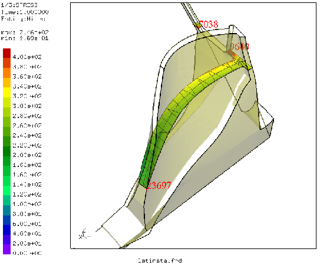

Next: qdel Up: Commands Previous: qcnt Contents
'qcut' RETURN 'w'|'q'|'n'|'p'|'u'|'v'This keyword is used to define a cutting plane trough elements to visualize internal results (see figure 5). The plane is defined either by picking three nodes (select with key “n”) or points (select with key “p”), or, in case a dataset-entity of a vector was already selected, by just one node (select with key “v”). The cutting plane is then determined by the direction of the vector (displacements, worstPS ..). Be aware of the key “u” (undo) to return to the un-cutted structure. See also ”cut” for the command-line function.
It is also possible to measure distances between two pixels on the screen. Just press the key ”w” on the positions of the two pixels. The distance is calculated in the scale of the displayed geometry.
|  |